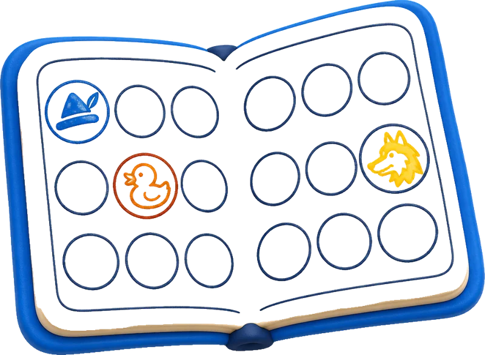
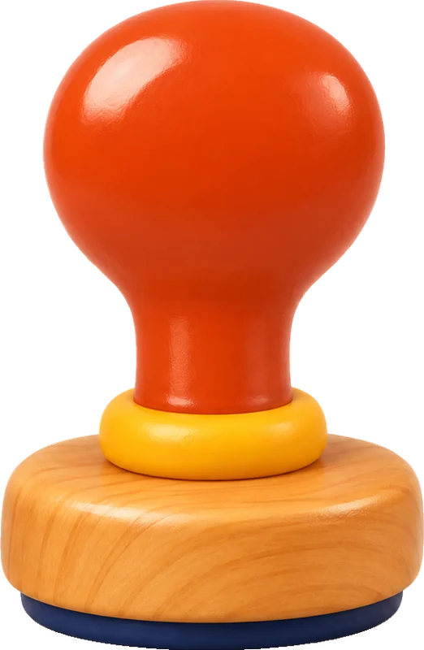

1–8. sınıf için okuma maceraları
Bir kitap seç. Macera başlasın.
Pinokyo · 1. durak
Bir kitap, dört yol
Alıştırma kitabın dışında değil. Hepsi hikâyenin içinde.
Bir durağın içinde
Pinokyo patikası
Kitap duraklara bölünür, duraklar sırayla açılır. Her durakta okuma öncesi, sırası ve sonrası için altı etkinlik var; hepsi seçtiğin kitaba göre.
1. durak · bu durağın etkinlikleri
Seviyene göre kitaplar
Her bölmede başka bir macera.
Rafından bir kitap seç. Seçtiğin kitap yolculuğu, pasaportu ve belgeyi de değiştirir.
Başlamak değil, bitirmek
Biten her kitap, pasaporta bir damga.
- Eserini seçHer eser bir patika. Çocuk, seviyesine uygun kitaplar arasından seçer.
- Durakları geçEser duraklara bölünür. Her durak günlük okumaya tam oturur.
- Belgeni alFinal aşamasını geçen çocuk, adının yazdığı QR kodlu okuma belgesini kazanır.
Puan hız için değil, doğruluk ve emek için verilir. Rozetler yolda gelir: Rekor Kıran, Süper Dedektif, Kitap Kurdu.


senin damgan!
Öğrencinin adı
Pinokyo eserini okuyup tüm durakları başarıyla tamamladı.
Kitabın arkasındaki sınıf
Ön yüzde eser, arka yüzde kazanım.
Her adım arka planda Türkçe öğretim programı kazanımlarıyla etiketlenir. Çocuk yalnızca hikâyeyi görür. Öğretmen sınıfın kelime ve anlama gelişimini tek ekranda izler.

Öğretmen paneli
3-B Sınıfı · Pinokyo
Kelime hazinesi
Çıkarım (dedektif)
Olay sırası
Bilgi bulma
Örnek görünüm. Gerçek kullanımda değerler sınıf verisinden gelir.
Çocuk keşfeder
Müfredat görmez, hikâye görür. Kısa duraklar, oyunlar, rozetler.
Öğretmen yönlendirir
Sınıfa patika atar, haftalık hedef koyar, anlama gelişimini durak durak izler.
Aile destekler
Haftalık gelişim özeti, paylaşılabilir belgeler, evde birlikte okuma önerileri.
Okulunuzda pilot
Patikaları birlikte gezelim.
30 dakikalık canlı demoda sınıflarınız için deneme hesaplarını açalım. Dönem başı ve sonu okuma-anlama ölçümüyle gelişimi birlikte görelim.